Explore the rich heritage, traditions, and key events that have shaped this vibrant region. Discover the culture, influential figures, and historical landmarks that make Rwanda a unique country. Enjoy your journey through its captivating past!

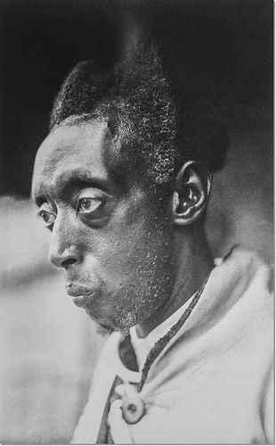
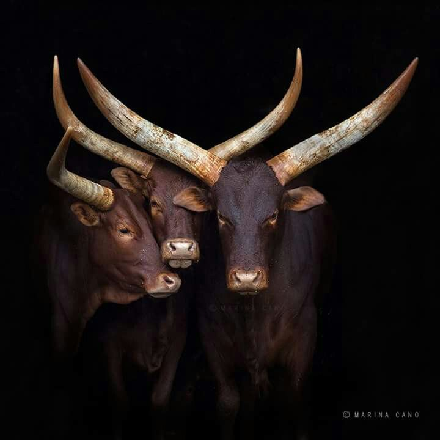


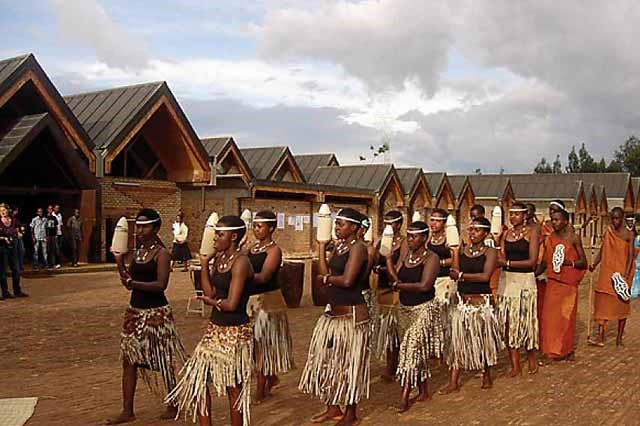
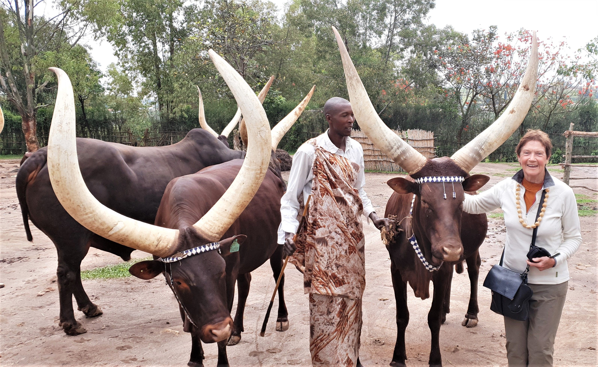
Kigali, Rwanda’s capital, is a clean, safe, and modern city set on rolling green hills. It blends vibrant markets, cultural spots, and a welcoming atmosphere, making it one of Africa’s most livable capitals.
The city is also a gateway to Rwanda’s attractions, from gorilla trekking in Volcanoes National Park to historic memorials. Kigali reflects the nation’s resilience and rapid growth.
Explore the historical and cultural sites of southern Rwanda with our expert guides.
Discover the natural beauty of Nyungwe Forest and Ethnographic Museum in a responsible way.
Participate in workshops to learn traditional dances, crafts, and local history.
Attend lectures on Rwanda's history, from the pre-colonial era to modern times.
 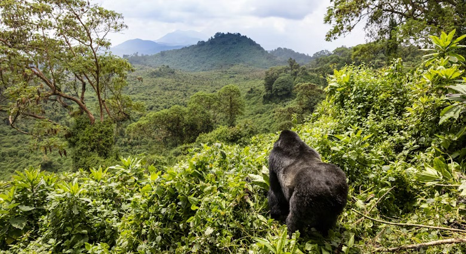
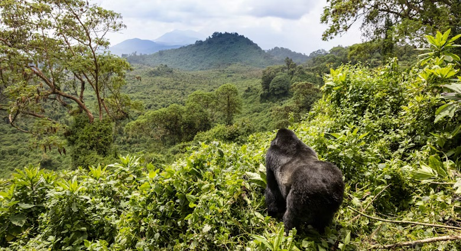
 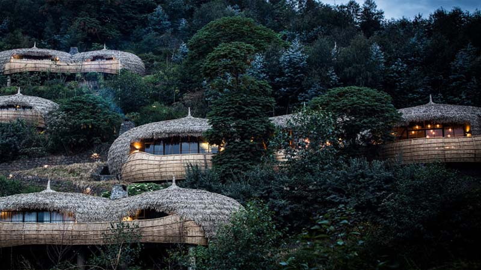
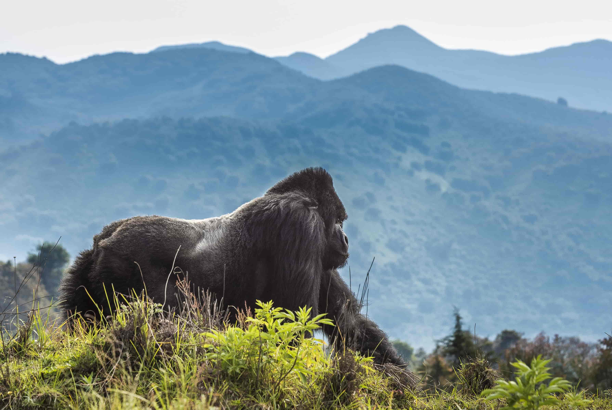
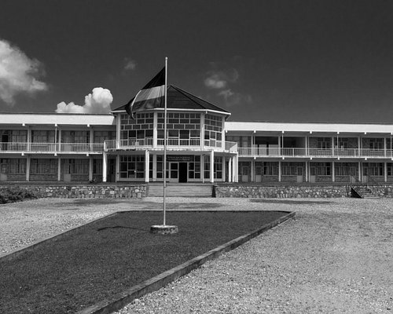
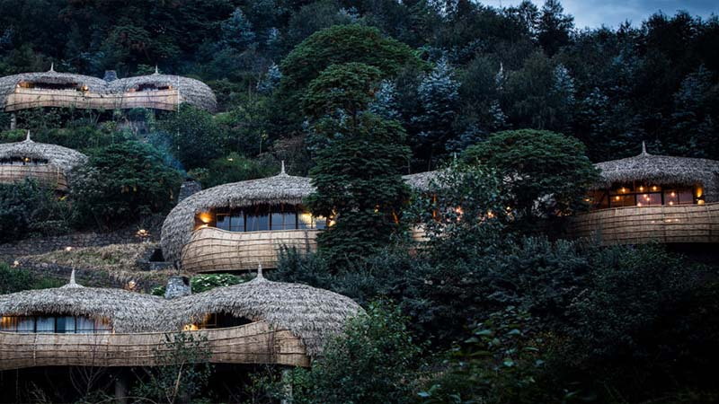
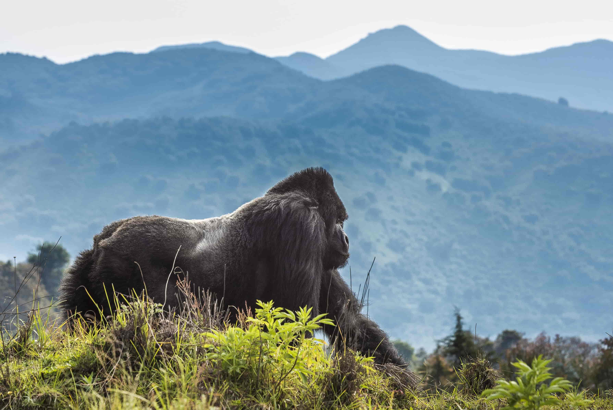
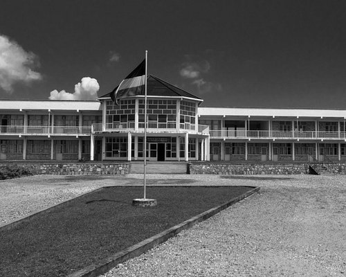
The history of Rwanda is fascinating, from the ancient Kingdom of Rwanda to its role in shaping modern Rwandan culture. Every visit to the region feels like stepping back in time.
Rwanda is a treasure trove of cultural heritage. The Intore dancers, traditional crafts, and oral histories preserved here are invaluable to understanding our identity.
Nyungwe Forest and Lake Kivu are not just beautiful landscapes—they are living testaments to the resilience and richness of southern Rwanda's history. Guiding visitors here is my greatest joy.
Teaching about the history of southern Rwanda is incredibly rewarding. The stories of the Mwami (king) and the region's role in Rwanda's independence inspire my students every day.
What wildlife can I see in Rwanda besides primates?
Are guided tours available in Rwanda?
Yes, guided tours are readily available for attractions like Nyungwe National Park, the Nyanza Royal Palace, Richard Kandt Museum and for other cultural and natural places in Rwanda.
What is the Ethnographic Museum known for?
Located in Huye, this museum contains seven galleries showcasing Rwandan history, culture, art, and traditional tools.
How is the Climate in Rwanda?
It Depends On seasons, though there isn't any harsh weather condition, for all seasons the weather is friendly.